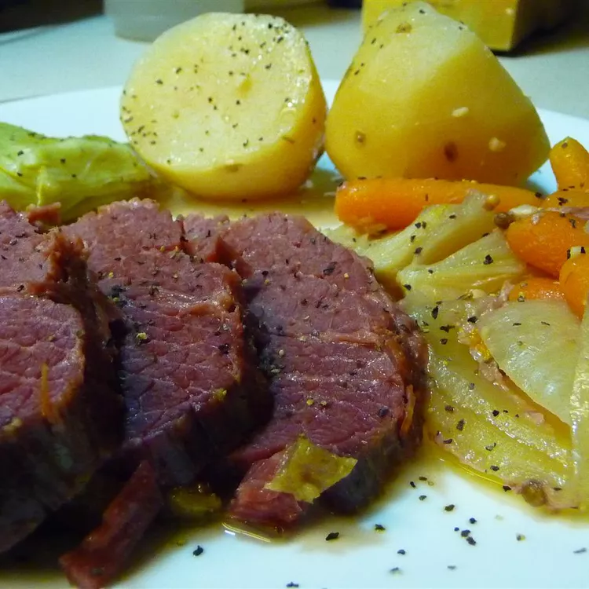

Back to all recipes.
corned beef and cabbage

Ingredients
- 4 potatoes, peeled and quartered
- 1 pound carrots, cut into large chunks
- 1 onion, cut into wedges
- 3 cups water
- 2 tablespoons sugar
- 2 tablespoons cider vinegar
- 3 cloves garlic, minced
- ½ teaspoon ground black pepper
- 1 bay leaf
- 1 (3 pound) corned beef brisket with spice packet, cut in half
- 1 small head cabbage, cut into wedges
Steps
- Place potatoes, carrots, and onion into a 5-quart slow cooker. Combine water, sugar, vinegar, garlic, black pepper, bay leaf, and contents of spice packet in a small bowl; pour over vegetables. Top with beef brisket and cabbage.
- Cover and cook on Low until beef and vegetables are tender, 8 to 9 hours. Remove bay leaf before serving.